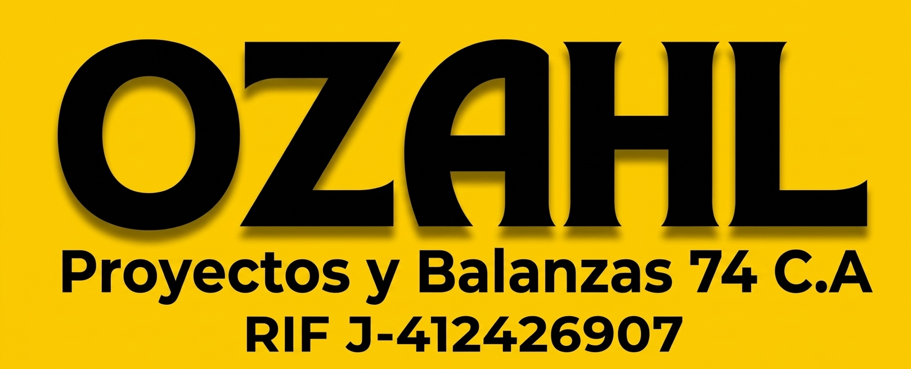

El cliente no compra un lector de báscula: compra tranquilidad para cerrar el mes, responder a una auditoría y saber qué pasó con cada camión.
Trabaja con base local; si falla la red, el pesaje no se detiene.
Catálogos, pesaje, inventario, ticket y auditoría integrados.
Compatibilidad RS-232/USB y TCP/IP multi-marca.
Rollos 58/80 mm, media carta, carta y PDF/TXT.
El peso capturado es inalterable; registro de auditoría.
Movimiento 10 (Ingreso) y Movimiento 60 (Despacho).
Diario, mensual, por vehículo, transportista y Kardex en Excel/PDF.
Matriz de permisos (ADMIN / OPERADOR / AUDITOR).
De versión DEMO a CENTRAL multi-estación sin reinstalar.
Puesta en marcha en 1 a 3 días.
Recepción de materia prima con planillas y demoras.
Inventario que no cuadra con las salidas.
Alto volumen y necesidad de evidencia.
Control de sobrecarga y despacho.
Compras a terceros y trazabilidad.
Control de recepción, despacho y flota.
